Akea Haus
ROLES
SOLO PROJECT
ACADEMIC
People don’t care enough about native plants to save them
Aotearoa’s native plants are highly endemic, yet occupy only a small portion of the land. While conservation campaigns have raised awareness, participation often remains short-term because the messaging can feel guilt-driven, distant, or duty-based.
People care longer when care feels personal
Research suggested that people formed stronger emotional attachments to plants when they carried personal meaning. This opportunity to shift native plants from ‘causes to protect’ into ‘companions to care for’.

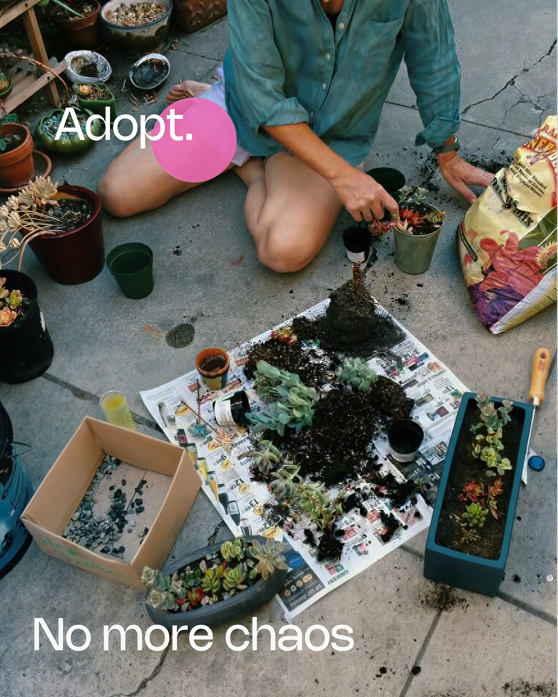
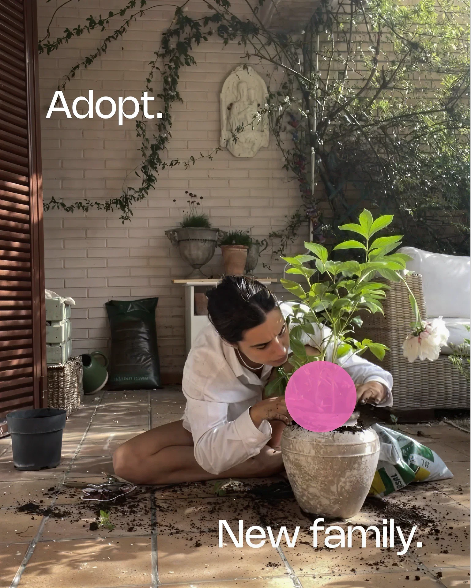
solution
Akea Haus connects neglected native plants with people seeking low-effort companionship by laying the foundation for long-term shifts around native plant life and Aotearoa’s unique flora.
Lasting impact
We focus on the long-term goal of laying the foundation for a shift in how people relate to native flora, rather than seeking immediate, small actions
Connection over consumption
Establishment of deeper relationships with plants are prioritised over one-off transactional interactions.
Personal connection
Through ‘adopting’, individuals commit to care for a plant. This shift in mindset establishes lasting associations with native plants. Not just informed action, but affection and memory tied to them.
Positive reframing
We aim to replace duty- or guilt-based conservation with delightful, memorable experiences that reshape how people feel about native flora.
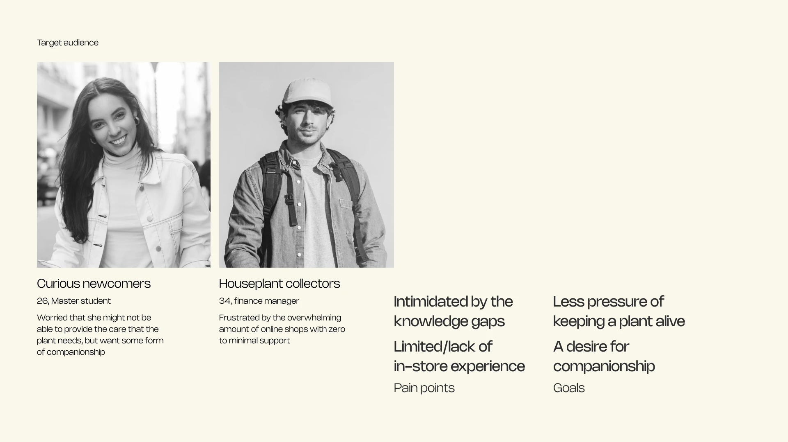
Care begins when it feels personal
Plants fulfilled emotional needs like responsibility, routine and ownership, but with lower effort than a pet. The benefits were particularly popular among young professionals in their mid-20s to mid-30s who are seeking companionship, but often lack the time and finances for pets.
Reshaping people’s perception of native plants as ‘companions’ rather than causes could bridge the gap between knowing and caring.
offline experience
From offline to online, all-in-one
A physical space where visitors are surrounded by native plants in a relaxed, social environment, creating passive positive associations instead of forced messaging.

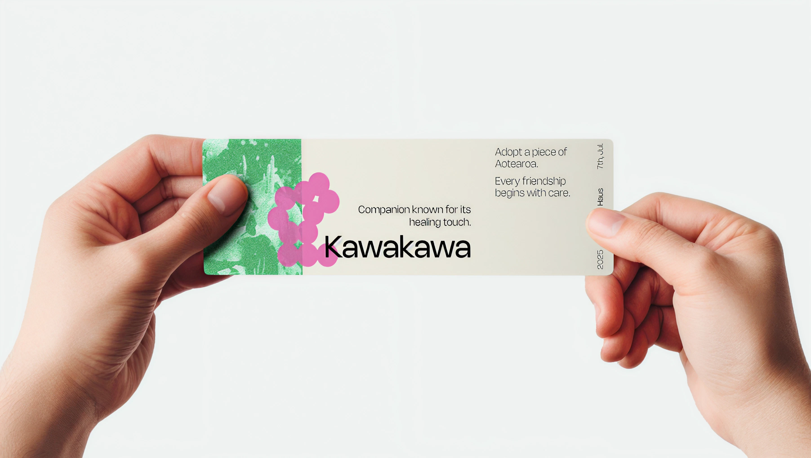
Find the perfect pet plant
An interactive quick quiz helps visitors discover a suitable companion plant based on lifestyle and preferences, lowering decision pressure and making the experience playful rather than transactional.
From adoption moment to everyday care
The match result is printed as a physical label with an NFC tag, attached to the newly adopted plant. Serving as a bridge between offline and online, leading to a personalised plant profile and care space.
digital experience
From maintenance to meaning making
The digital experience shifts the focus from ‘keeping the plant alive’ to ‘building a relationship’. Each plant has a personalised profile with locally tailored information and light documentation features to create a living record of the relationship.
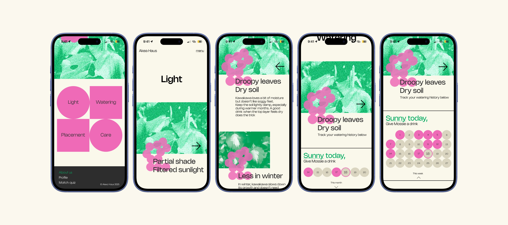
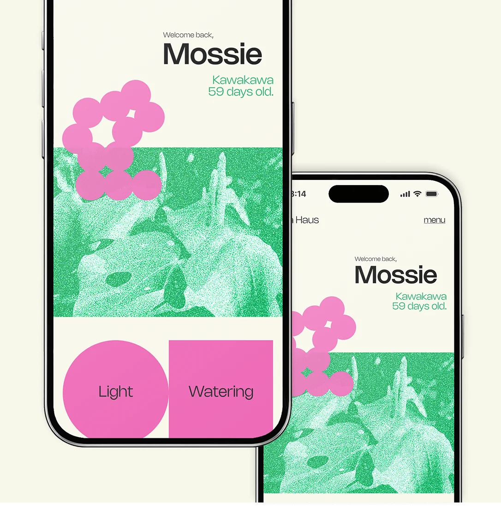
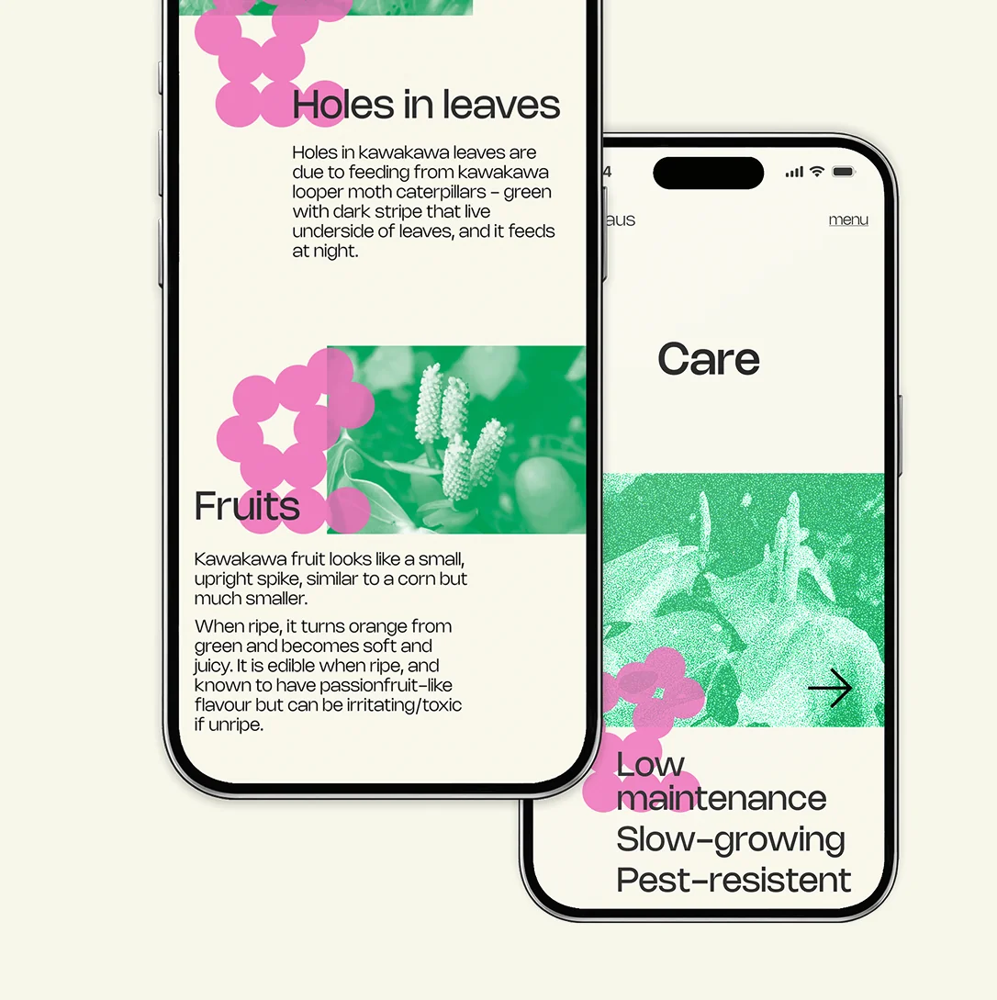

Personalised profile
The personalised home page with a name encourages an emotional bond between the owner and the plant.
Digestible information
The experience offers both quick, practical tips and deeper guidance, adapting to user feedback and the target audience’s preference for bite-sized information, allowing learning at their own pace.
Watering tracker
An interactive water tracker uses local climate data to suggest watering, reducing the anxiety of ‘am I doing this right?’ while subtly teaching about environmental context.
Process
Test and refinements
The process focused on testing and refining both visuals and flow to cater the users who are seeking for easily accessible information online.
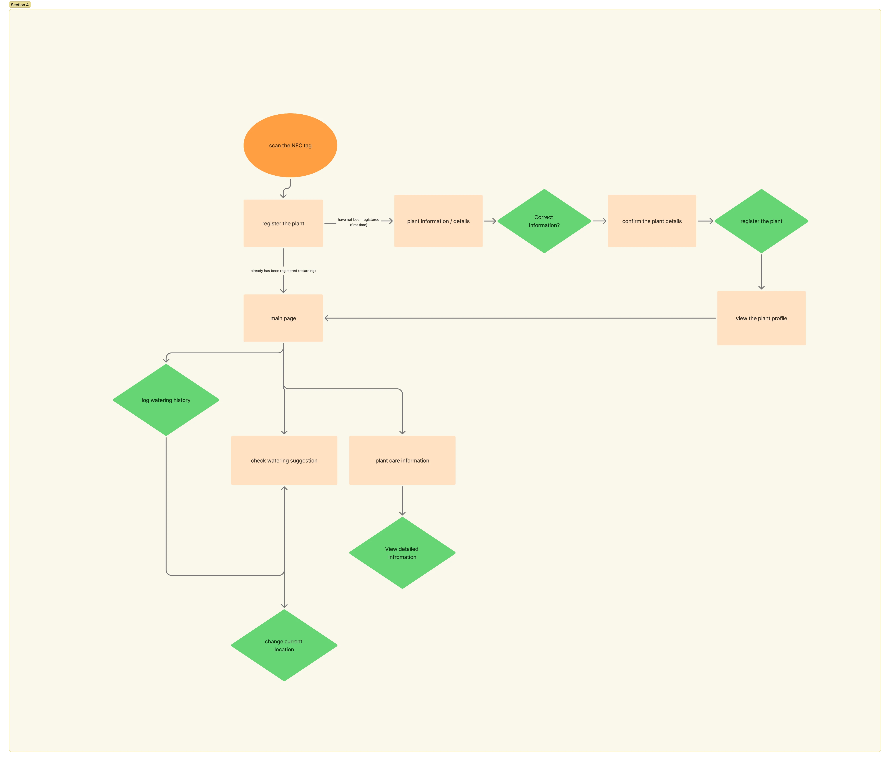
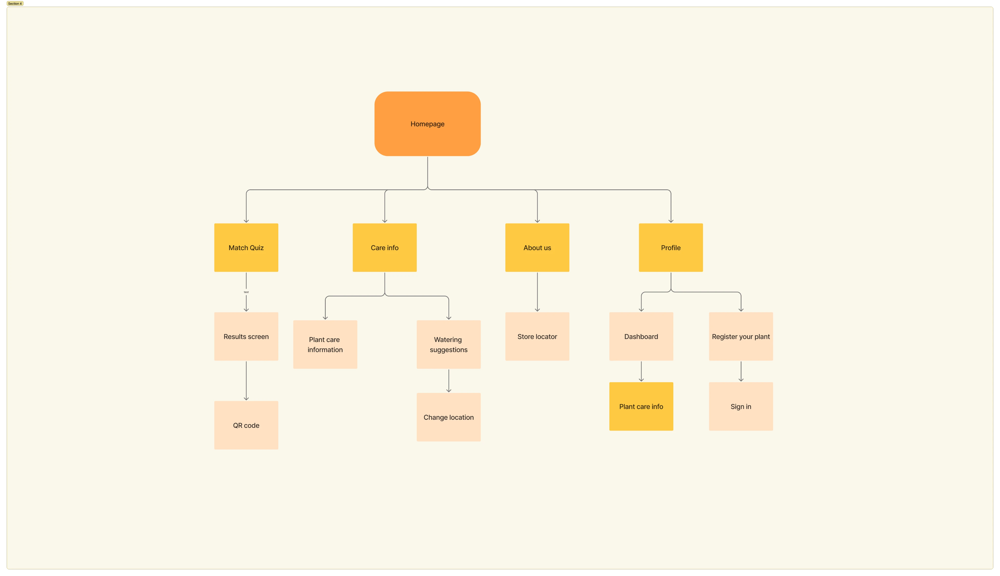
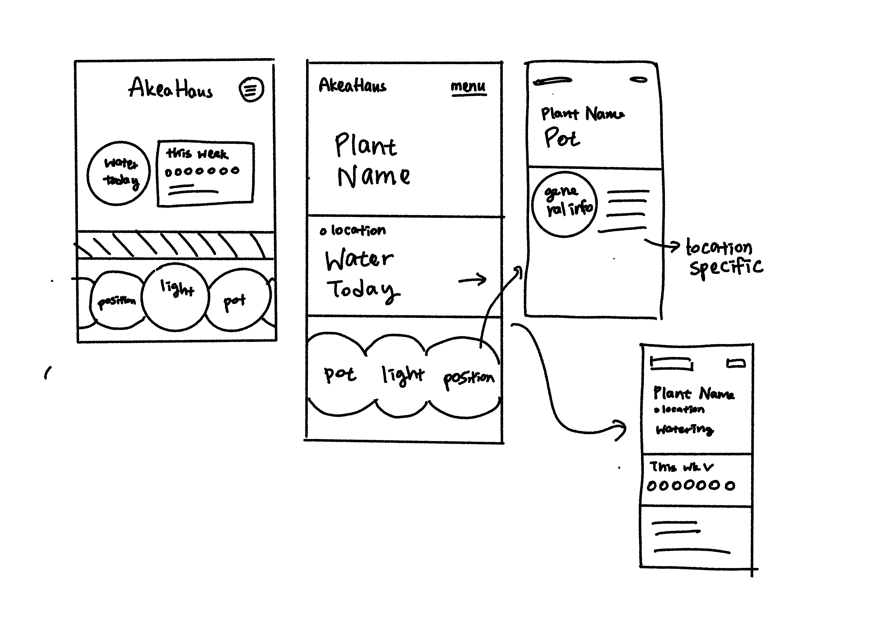
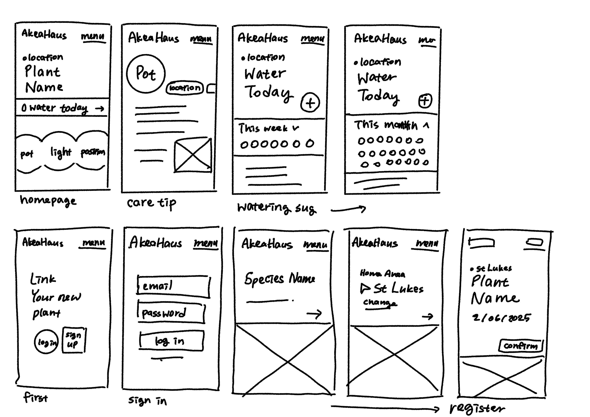
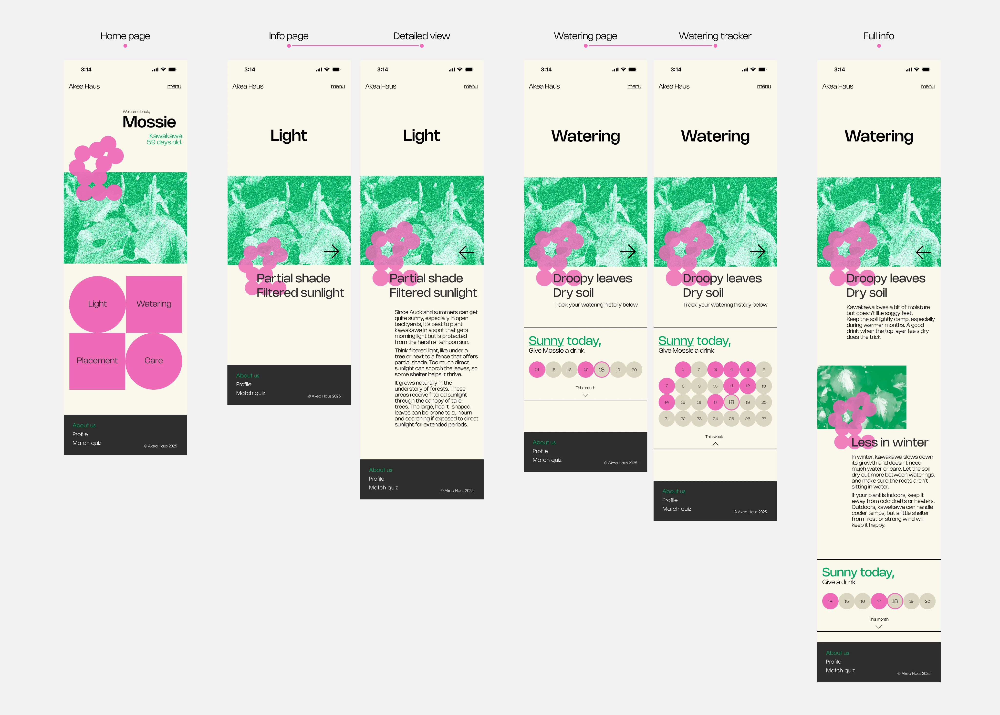